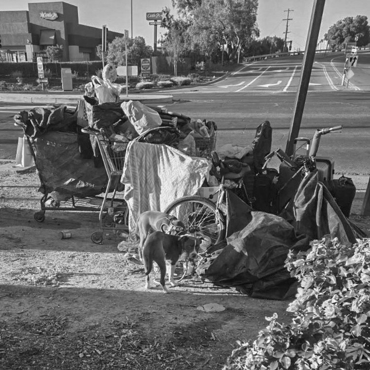
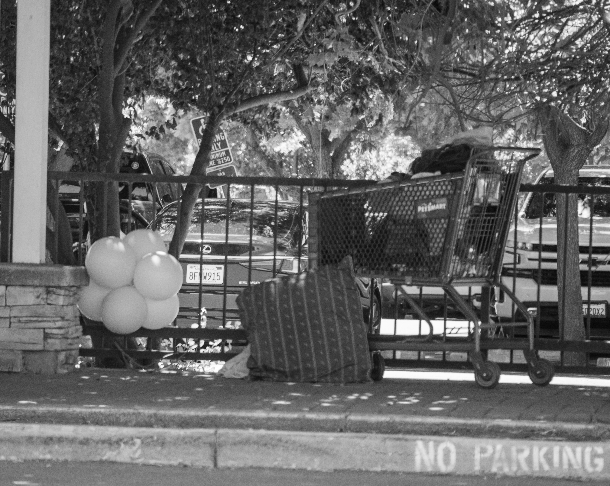
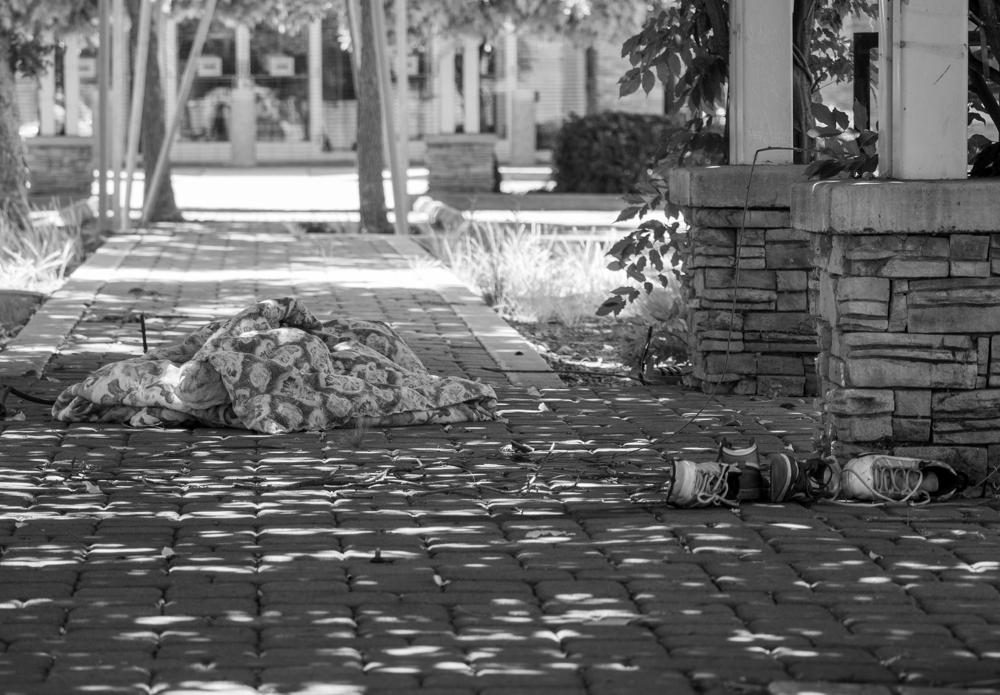
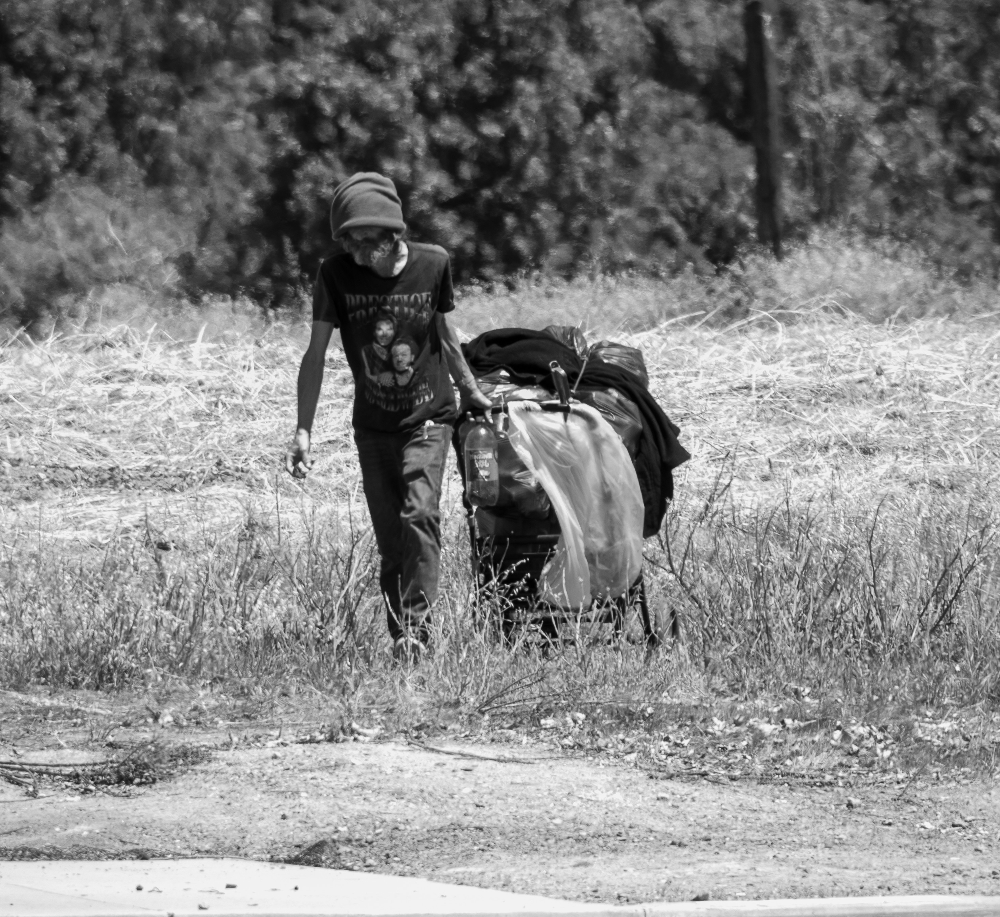
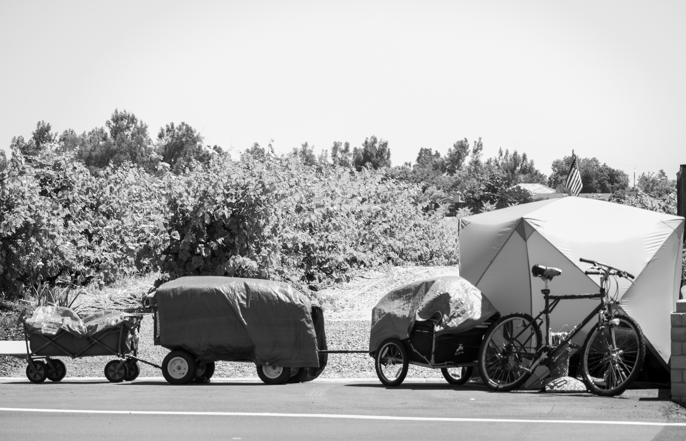

I focused on the social justice issue of homelessness. My photographs show temporary shelters, personal belongings, shopping carts, and spaces connected to people living on the streets. I wanted to show ordinary evidence of survival and daily life. Many of the objects in this series may seem abandoned or unimportant at first but they represent everything a person owns.
I chose this topic because homelessness is something I regularly witness in my town. Many people pass by these situations without truly acknowledging the individuals behind them. There is often a belief that unhoused people are on the streets because they choose to be or that their struggles are entirely their own fault. In this series I wanted to challenge those assumptions and encourage viewers to recognize the humanity within these spaces.
To make this project I spent several hours driving around my town searching for locations that could reflect the realities of homelessness. I photographed tents, carts, resting areas, and personal items that reveal how people adapt to unstable living conditions.
At first I wasn't sure if this concept would communicate clearly without additional context. I continued photographing these environments and realized the absence of direct interaction could make the images more powerful. My goal is to encourage viewers to look beyond stereotypes and see unhoused individuals with empathy and understanding.




